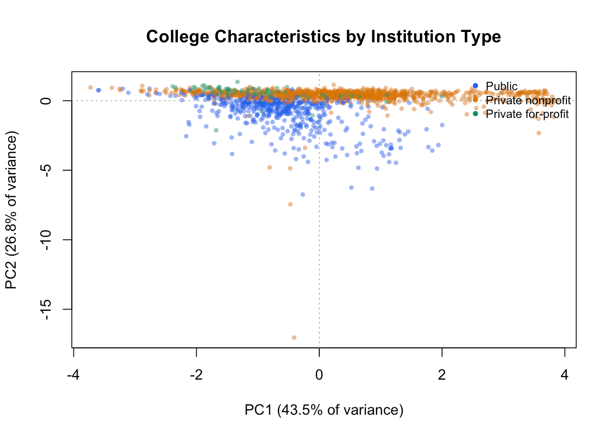

- completion-model institutions
- 1,618
- Random Forest test R² for completion (linear: 0.47)
- 0.54
- R samples matched exactly in SQLite
- 4 / 4
Why this work matters
Define inclusion rules, check identifiers and missing values, and make comparisons traceable before interpreting results. The Python-to-SQLite check confirms each model sample before any result is read, and the model comparison uses held-out data instead of in-sample fit. The same habits apply before a planning, pricing, or demand forecast is used.
The question
How do cost, financial aid, selectivity, enrollment, and institution type relate to college completion and earnings? And does Random Forest predict these outcomes better than linear models?
Data and sample
The audited source snapshot contains 6,273 institution records. Suppressed and non-numeric entries were treated as missing. Complete-case counts, meaning institutions with no missing values in a model’s fields, vary: 1,618 for the completion model, 2,138 for the model excluding admission rate, 1,949 for earnings, and 1,727 for PCA. The saved SQL missingness output reports admission rate missing for 69.55% of the source.
My contribution
Prepared institution-level College Scorecard data, assessed missingness, estimated completion and earnings regressions, compared samples with and without admission rate, applied 10-fold cross-validated Lasso, and performed standardized PCA. Compared Linear Regression, Lasso, and Random Forest on a shared train/test split and shared cross-validation folds. Built a Python-to-SQLite check that confirms each R sample contains the expected institutions.
Model comparison
Linear Regression, Lasso, and Random Forest (1,000 trees) were fit on the same 80/20 train/test split and evaluated on the same 10 cross-validation folds (seed 4001). The completion model uses admission rate, cost, Pell Grant share, enrollment, and institution type. The earnings model uses completion rate, cost, Pell Grant share, median debt, and institution type.
| Model | Completion test R² | Completion CV R² | Earnings test R² | Earnings CV R² |
|---|---|---|---|---|
| Linear Regression | 0.4655 | 0.4676 | 0.4967 | 0.4980 |
| Lasso | 0.4631 | 0.4677 | 0.4962 | 0.4980 |
| Random Forest | 0.5418 | 0.5298 | 0.5985 | 0.5919 |
Random Forest had a higher R² than Linear Regression in 9 of 10 folds for completion and 10 of 10 folds for earnings, so the gain is not an artifact of one lucky split. Test sets held 324 and 390 institutions.
What drives each outcome
For completion, the regression and Random Forest ranked predictors in the same order: cost of attendance first, then Pell Grant share. For earnings, Random Forest ranked completion rate and median debt highest, while the two methods disagreed on cost. Cost is correlated with completion rate (r = 0.61) and median debt (r = 0.56), which likely explains why its rank shifts between methods.
Regression and PCA findings
Cost of attendance was positively associated with completion and earnings; Pell Grant participation was negatively associated with both, conditional on the other included predictors. Completion R² was 0.4834 and earnings R² was 0.5053, so each model accounted for roughly half of the variation in its outcome. These describe in-sample fit, not held-out prediction.
- With admission rate
- 1,618 complete cases · adjusted R² 0.4815
- Without admission rate
- 2,138 complete cases · adjusted R² 0.4082
Adjusted completion R² was 0.4815 with admission rate and 0.4082 without it. Lasso, a method that drops predictors adding little to the model, retained all predictor terms at the minimum-error penalty. In PCA, which condenses the four predictors into a few summary dimensions, PC1 contrasted cost with admission rates and Pell participation; PC2 was dominated by enrollment. Institution types overlap in the plot.

Open full size ↗| Model | Complete cases | R² | Adjusted R² |
|---|---|---|---|
| Completion | 1,618 | 0.4834 | 0.4815 |
| Completion without admission rate | 2,138 | Not listed | 0.4082 |
| Earnings | 1,949 | 0.5053 | Not listed |
SQL validation & sample checks
Before reading any model result, I check that each R sample contains the institutions I expect. Python treats suppressed and non-numeric values as missing (the same rule used in R), loads the selected College Scorecard fields into an in-memory SQLite database, and rebuilds each sample with SQL.
| Analysis sample | SQLite count | Reported R count |
|---|---|---|
| Completion with admission | 1,618 | 1,618 |
| Completion without admission | 2,138 | 2,138 |
| Earnings | 1,949 | 1,949 |
| PCA | 1,727 | 1,727 |
The 6,273 records have no duplicate UNITIDs. For all four samples, the set of UNITIDs exported from R is exactly the same as the set selected in SQL, not just the same count. The script writes the result to a CSV so the check can be rerun whenever the source file is refreshed.
Interpretation and next steps
These are institution-level associations, not causal effects or estimates for individual students. Expensive schools may simply enroll students who would do well anywhere. Only four-year institutions are covered, and missing data limit generalization. The poster will be presented on December 10, and the final report is due December 15.
The source repository remains private; selected methods and aggregate results are summarized here.
Analysis workflow
View the three steps
- Analyze in R Clean selected fields and examine completion and earnings with regression, Lasso, and PCA.
- Audit in SQL Use Python to load selected fields into SQLite, check identifiers, and compare each sample with the UNITIDs exported from R.
- Compare models Fit Linear Regression, Lasso, and Random Forest on the same 80/20 split and the same 10 folds, then compare test and cross-validated R².